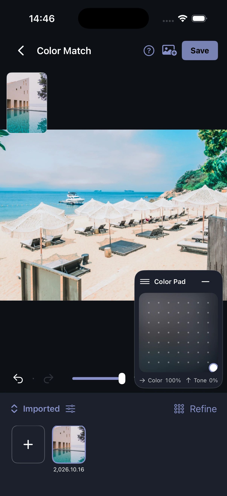
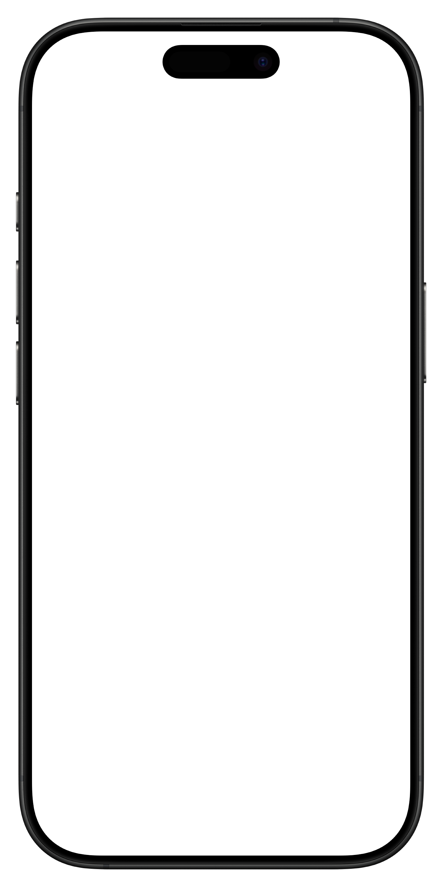

Choose a color direction that suits your photo
A reference guides color and tonal relationships. It does not place the reference photo’s people, buildings, or objects into your image, or guarantee that two different scenes will look identical.
Start with a reference taken in similar light or a related setting. A landscape filled with blue sky may be a poor guide for an indoor portrait. Judge the change on your own photo.
Match, compare, and keep editing
Follow the same original, reference, and actual export through four steps.
1. Choose your photo and a reference
Choose the photo you want to edit, then a reference whose palette you like. This example uses the turquoise pool and architecture to guide a beach photo’s colors, without replacing the people or scene in the original.

2. Adjust intensity, color, and tone
Look at the overall direction before fine-tuning. If the change feels too strong, lower the intensity, then compare the color and tone contributions separately.
- Intensity: control the overall strength of the match.
- Color: judge how much of the reference palette to borrow.
- Tone: lower its contribution when you want to retain more of the original light and dark relationships.
The pictured settings illustrate this example, not a recommended default. Labels and positions can vary by version.



3. Compare the result with your original
Check the water, sand, white parasols, and the subject you care about. A closer match to a reference is not automatically a better photo. Lower the strength or try another reference if the direction does not suit your image.

Drag the handle left or right, or use the arrow keys to adjust the comparison.
An actual color-matching export of the same original. Results depend on the photo and reference.
4. Save the result or keep refining
Once you like the match, you can save it. To refine this beach photo further, use a mask and brush to adjust just the water’s saturation while keeping the sand and white parasols as they are. Review the whole photo before saving to check the edges and transitions.
For your own work, wait for the system to confirm saving before treating delivery as complete.
What makes a match worth keeping?
Look at the subject first. Does skin still look natural? Do important colors still make sense? Do the shadows retain the details you need? A closer match to the reference is not automatically a better edit.
If you like the direction but one area needs work, continue with local adjustments. If the overall direction never feels right, try another reference before adding more corrections.
Color matching and light matching
Color matching borrows palette and tone. Optional light matching helps with transferable light and dark relationships. It does not promise to reconstruct shadows, move a light source, or turn any daytime scene into night.
Scene content, exposure, and lighting differences affect the result. Compare with the original rather than expecting a pixel-for-pixel copy of the reference.
Are photos uploaded?
Awaking analyzes references, matches colors, and edits on device without an account. Apple may need a network connection to retrieve an iCloud original. When you actively share to another app, you choose the recipient.